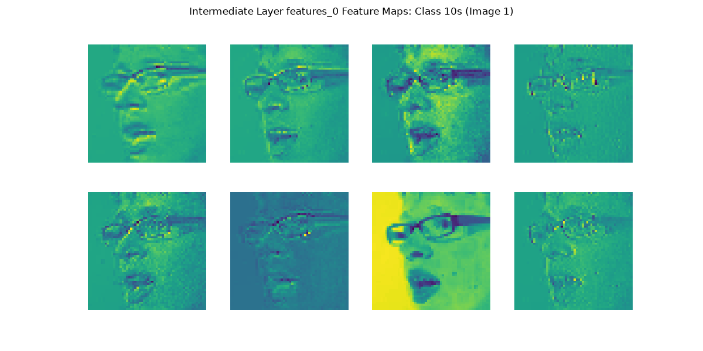
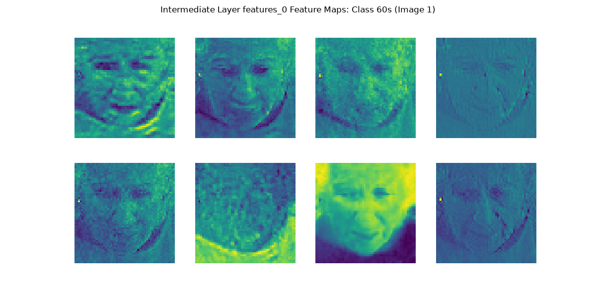
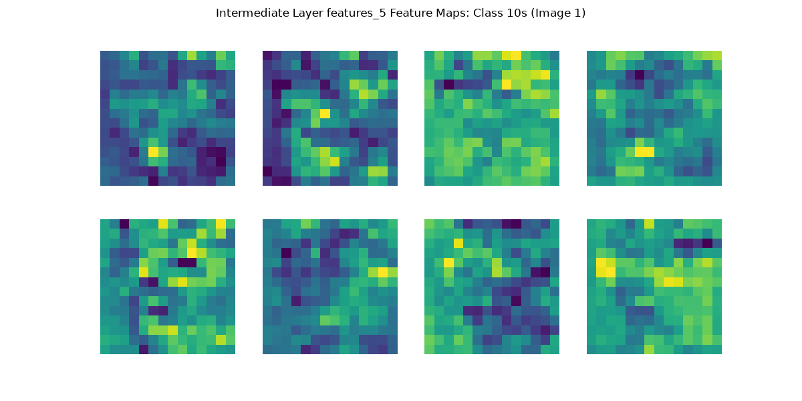
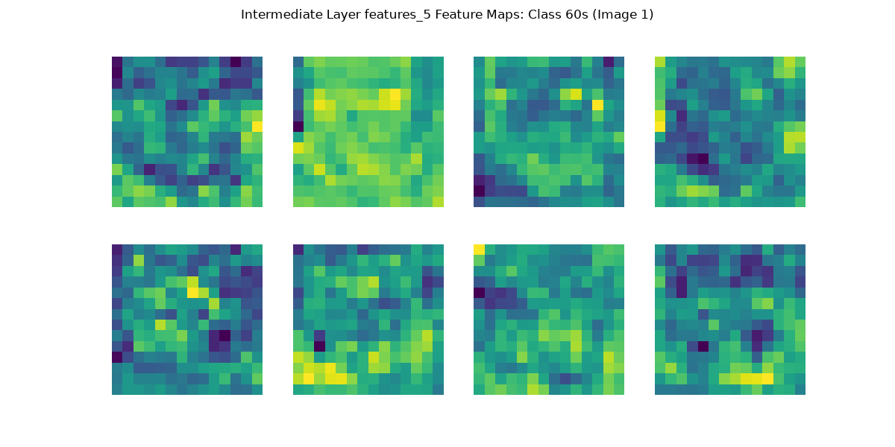
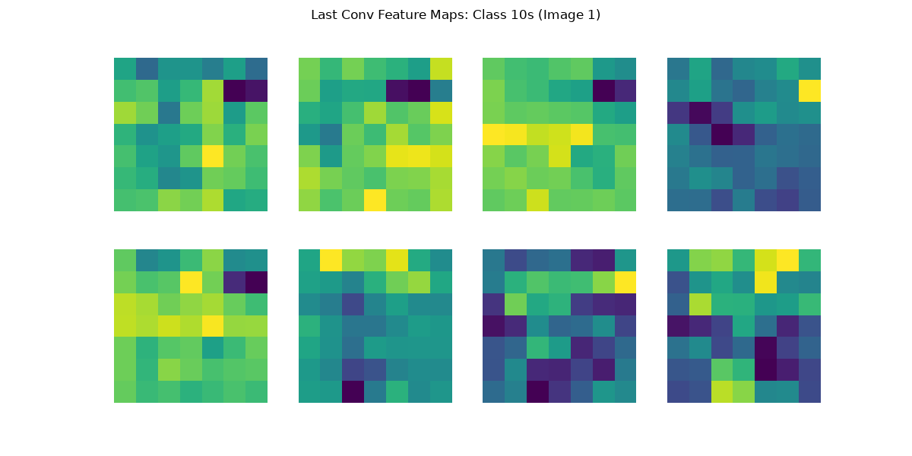
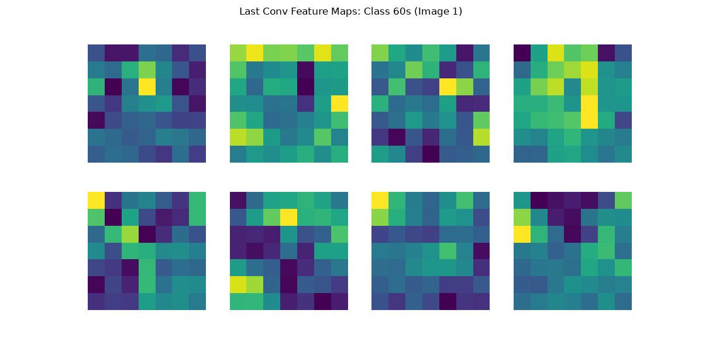

特徴マップ
学習したモデルがどのような基準で判断しているかを説明するのは難しいのですが, いくつかの方法があります. まずは基本的な方法として, 各層でどのような特徴を取り出しているかを可視化した特徴マップを見てみましょう.
ここでは, 畳み込み層の出力を年代 (10s から 60s) ごとに可視化します. 特徴マップは, 最初の層から最終層に近づくにつれて抽象度が上がり, 解釈が難しくなります. target_layers_indices = [0,5,-1] で指定した 0 層, 5 層, 最終層 (-1) を対象にしていますが, 必要であれば可視化する層を増やしてみましょう.
次のコードは, 年齢識別のコード全体の main 関数から, 特徴マップを描く部分を抜き出したものです. 画像は次のようなフォルダ構成で保存されます.
❯ tree -d data/result
data/result
├── feature_maps
│ ├── 10s
│ │ ├── features_-1
│ │ ├── features_0
│ │ ├── features_5
│ │ └── last_conv
│ ├── 20s
│ │ ├── features_-1
│ │ ├── features_0
│ │ ├── features_5
│ │ └── last_conv
│ ├── 30s
│ │ ├── features_-1
│ │ ├── features_0
│ │ ├── features_5
│ │ └── last_conv
│ ├── 40s
│ │ ├── features_-1
│ │ ├── features_0
│ │ ├── features_5
│ │ └── last_conv
│ ├── 50s
│ │ ├── features_-1
│ │ ├── features_0
│ │ ├── features_5
│ │ └── last_conv
│ └── 60s
│ ├── features_-1
│ ├── features_0
│ ├── features_5
│ └── last_convコードは次のとおりです.
#------------------------------------------------------------------
#特徴マップの描画
#------------------------------------------------------------------
# 中間層のフックを設定する層リストの設定例
target_layers_indices = [0, 5, -1] # お好みで変更可能
# フックで取り出した特徴マップを保持する辞書
intermediate_feature_maps = {}
def get_intermediate_hook(name):
def hook_fn(m, input, output):
# output: [B, C, H, W]
intermediate_feature_maps[name] = output.detach().cpu()
return hook_fn
# 対象層にフックを登録
hooks = []
for idx in target_layers_indices:
layer_name = f"features_{idx}"
h = model.features[idx].register_forward_hook(get_intermediate_hook(layer_name))
hooks.append(h)
# --- 最後の畳み込み層のフック ---
feature_maps_last_conv = []
def get_feature_map_hook_conv(self, input, output):
feature_maps_last_conv.append(output.detach().cpu())
hook_conv = model.features[-1].register_forward_hook(get_feature_map_hook_conv)
# 抽出したいクラス (0:10s,1:20s,...,5:60s)
target_classes = [0,1,2,3,4,5]
# 各クラスから9枚ずつ取得するためのカウンタ
images_per_class = 9
extracted_counts = {cls: 0 for cls in target_classes}
# 保存ディレクトリの用意
base_dir = 'data/result/feature_maps'
if not os.path.exists(base_dir):
os.makedirs(base_dir)
# クラスごとのフォルダを作成 (10s～60s)
for cls in target_classes:
class_label_str = f"{(cls+1)*10}s"
class_dir = os.path.join(base_dir, class_label_str)
if not os.path.exists(class_dir):
os.makedirs(class_dir)
# 中間層用のサブフォルダを用意
for idx in target_layers_indices:
layer_name = f"features_{idx}"
layer_dir = os.path.join(class_dir, layer_name)
if not os.path.exists(layer_dir):
os.makedirs(layer_dir)
# 最終Conv層用のフォルダ
last_conv_dir = os.path.join(class_dir, 'last_conv')
if not os.path.exists(last_conv_dir):
os.makedirs(last_conv_dir)
model.eval()
val_iter = iter(dataloaders['val'])
with torch.no_grad():
# 全クラスが指定枚数分揃うまで繰り返す
while not all(count == images_per_class for count in extracted_counts.values()):
try:
inputs, labels = next(val_iter)
except StopIteration:
# データがなくなったら終了
break
inputs = inputs.to(device)
# フック用リストをクリア
feature_maps_last_conv.clear()
intermediate_feature_maps.clear()
# 順伝播：フックで特徴マップ取得
outputs = model(inputs)
fm_batch = feature_maps_last_conv[0] # [B, C, H, W] 最終Conv層出力
for i in range(inputs.size(0)):
cls = labels[i].item()
if cls in target_classes and extracted_counts[cls] < images_per_class:
class_label_str = f"{(cls+1)*10}s"
class_dir = os.path.join(base_dir, class_label_str)
# 中間層特徴マップ可視化
for idx in target_layers_indices:
layer_name = f"features_{idx}"
fm_intermediate = intermediate_feature_maps[layer_name][i] # shape: [C, H, W]
num_channels_to_plot = min(8, fm_intermediate.shape[0])
fig, axes = plt.subplots(2, 4, figsize=(12, 6))
axes = axes.flatten()
for ch in range(num_channels_to_plot):
ax = axes[ch]
ax.imshow(fm_intermediate[ch].numpy(), cmap='viridis')
ax.axis('off')
plt.suptitle(f'Intermediate Layer {layer_name} Feature Maps: Class {(cls+1)*10}s (Image {extracted_counts[cls]+1})')
layer_dir = os.path.join(class_dir, layer_name)
out_path = os.path.join(layer_dir, f'feature_map_{extracted_counts[cls]+1}.png')
plt.savefig(out_path)
plt.close()
# 最終Conv層特徴マップ可視化
fm = fm_batch[i] # shape: [C, H, W]
num_channels_to_plot = min(8, fm.shape[0])
fig, axes = plt.subplots(2, 4, figsize=(12, 6))
axes = axes.flatten()
for ch in range(num_channels_to_plot):
ax = axes[ch]
ax.imshow(fm[ch].numpy(), cmap='viridis')
ax.axis('off')
plt.suptitle(f'Last Conv Feature Maps: Class {(cls+1)*10}s (Image {extracted_counts[cls]+1})')
last_conv_dir = os.path.join(class_dir, 'last_conv')
out_path = os.path.join(last_conv_dir, f'feature_map_{extracted_counts[cls]+1}.png')
plt.savefig(out_path)
plt.close()
extracted_counts[cls] += 1
if all(count == images_per_class for count in extracted_counts.values()):
break
# フックを削除
hook_conv.remove()
for h in hooks:
h.remove()
print('特徴マップ描画完了')生成した画像のうち, 10 代 (10s) と 60 代 (60s) の 1 枚目 (テストデータの DataLoader から最初に取り出された画像. Grad-CAM と Guided Backpropagationで使う画像とは別のもの) の特徴マップを確認してみましょう (画像の出典: FairFace (Kärkkäinen & Joo, 2021), CC BY 4.0. 特徴マップの図は, 元の画像をモデルに入力して得た中間層の出力を描いたもので, 元の画像を加工しています).


最初の層の特徴マップは抽象化が進んでおらず, 入力画像に近い形状や明暗を捉えています. 10 代の画像では眼鏡の縁や唇の輪郭, 60 代の画像では顔の輪郭や目の周りの線が, チャンネルによって明るく, あるいは暗く表れています. この段階ではまだ「顔」「目」「鼻」などのまとまった対象は捉えておらず, 画素の単位での色, 明るさ, エッジなどの低次の特徴 (輪郭や縞模様, 明るい部分や暗い部分など) を取り出している段階に見えます.


5 層の特徴マップは 14 × 14 の粗い解像度になり, 人物の顔そのものは読み取れません. モザイク状の特徴マップの中に, 一部のマスだけが明るいものがあり, 特定の領域に強く反応するフィルタがあることが分かります.


最終層の特徴マップは 7 × 7 になり, 人が見ても元の画像との対応は分からなくなります. それでも, ネットワークにとって意味のある特徴 (特定の配置や模様, 対象物のおおよその形など) がチャンネルごとに表されていると考えられます. この段階では, 分類に役立つ特徴が少数の値に凝縮されています. なお, コードの features_-1 と last_conv は, どちらも model.features[-1] の出力なので, 同じ特徴マップが保存されます.